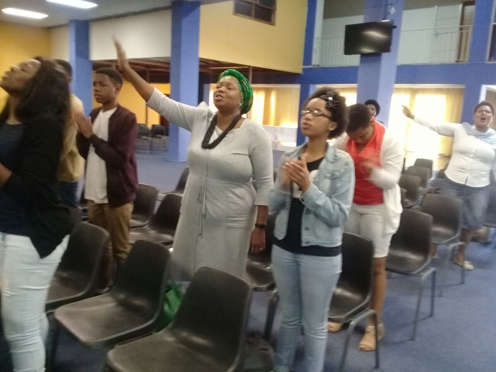
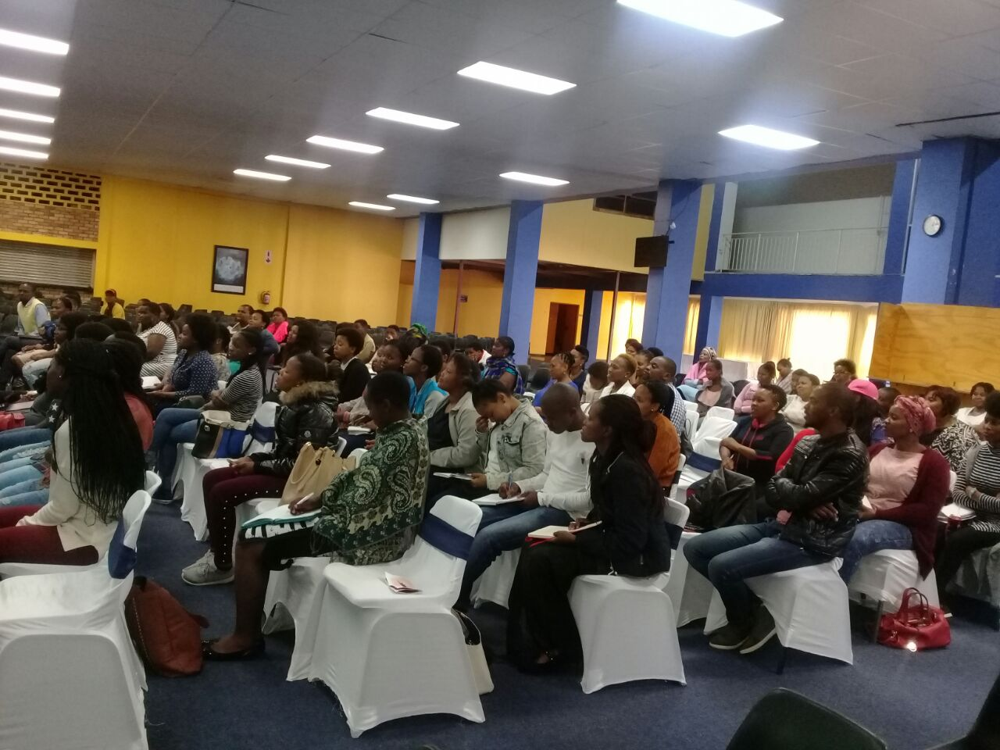
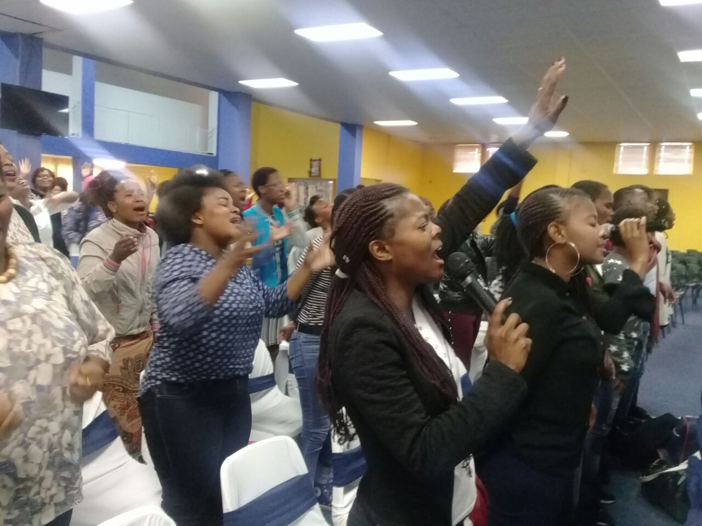
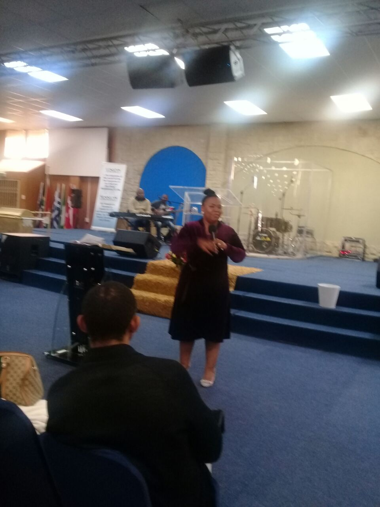
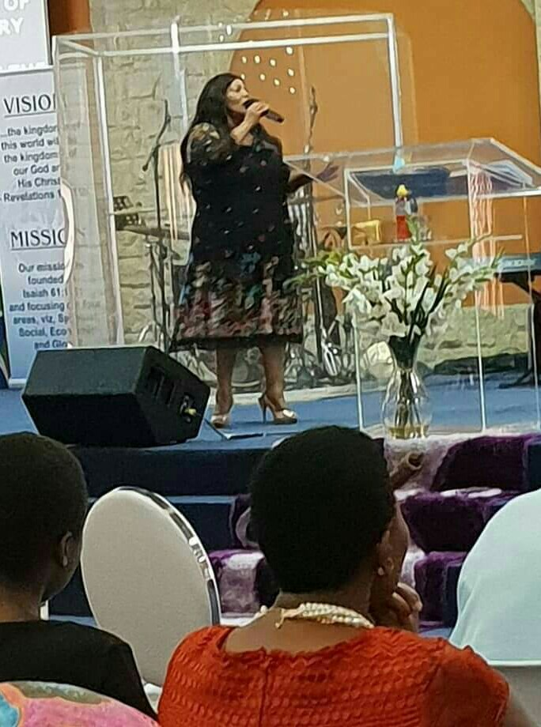
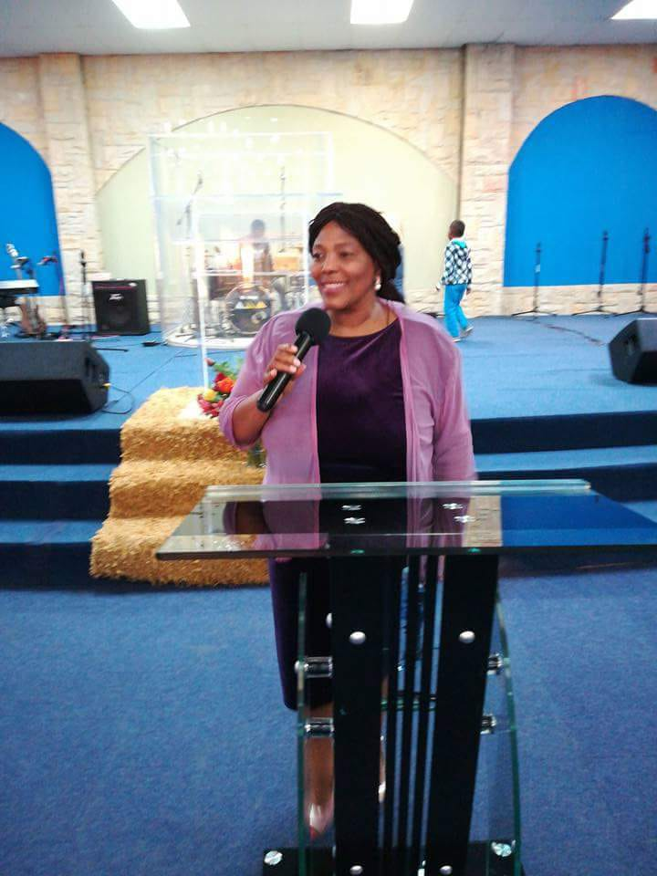

Date: 29-30 March 2019
Time:Friday 6pm & Saturday 9am
Venue: Bisho Community Church
Host: Prophet Cengie Mvula
Registration fee: R100
Time:Friday 6pm & Saturday 9am
Venue: Bisho Community Church
Host: Prophet Cengie Mvula
Registration fee: R100
Enquiere:
Mrs Ndileka Va - 065 176 9920
Nonjongo Yekelo - 062 147 0558
Office - 040 635 0422
Mrs Ndileka Va - 065 176 9920
Nonjongo Yekelo - 062 147 0558
Office - 040 635 0422
Vision
Amos 9:11-12(AMP)
"In that day I will raise up the Tabernacle of David that is fallen and close up the breaches therefore and will raise up his ruins, and I will build it as in days of old"
Mission
Raising the THird Day worshipers who will Worship God in the Third Dimension.
Raising prophetic psalmist and ministrels
1 Chronicles 25:1-3
Restoring the voice of the bridegroom and the bride
Jeremiah 33:9-14
Worshiping God in spirit and truth
John 4:23
Raising worshipers whi will be the voice in the wilderness Isaiah 40:3
3





